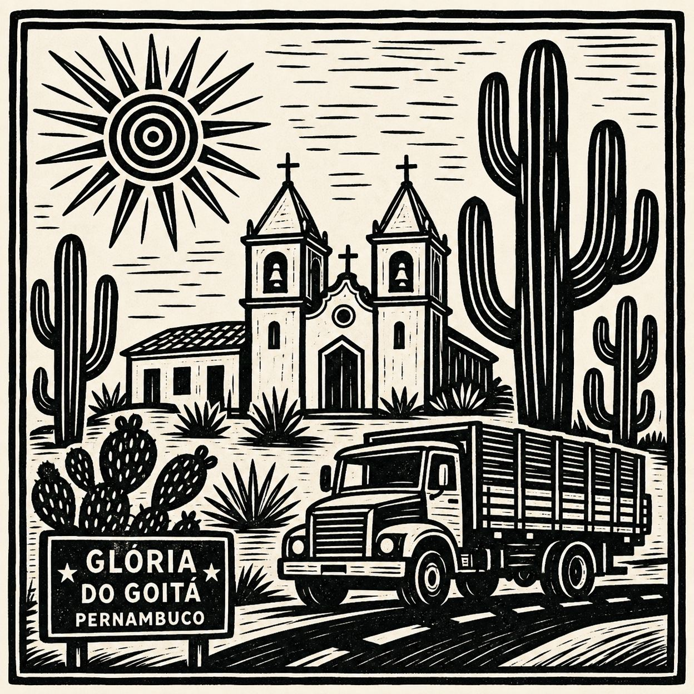
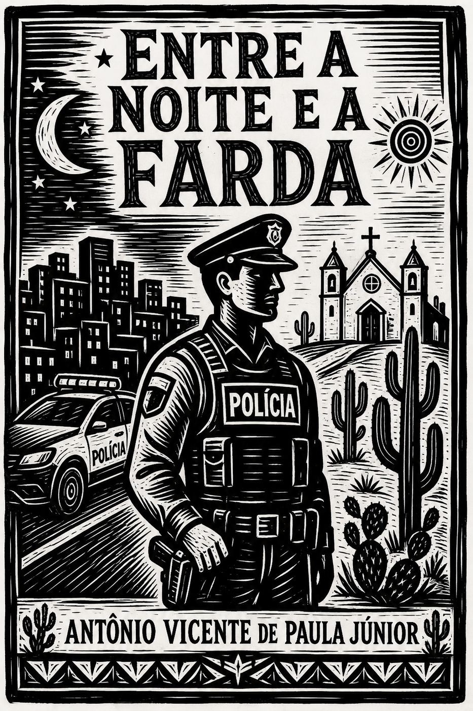

Capítulo 1
Minhas raízes
Da terra que me viu nascer aos primeiros valores que me guiaram.
Memórias de Antônio Vicente de Paula Júnior —
Tenente da Polícia Militar de Pernambuco
Uma trajetória marcada por vocação, disciplina,
fé, serviço e honra.

Entre a Noite e a Farda é uma autobiografia memorial que atravessa luzes e sombras da vida de Antônio Vicente de Paula Júnior, Tenente da Polícia Militar de Pernambuco. Das ruas e plantões ao convívio com a família, da fé que sustenta aos valores que formam o caráter, este livro é um testemunho de entrega ao serviço público e ao próximo.
Mais que uma história pessoal, é um legado de honra, disciplina e amor à pátria, compartilhado com familiares, amigos e todos que acreditam no poder do exemplo.
Memórias reais
Fotos do autor, da carreira, da família, da Polícia Militar, de eventos e de lembranças pessoais.
Livro de visitas
Espaço simples para familiares e amigos deixarem mensagens, sem login, sem senha e sem cadastro.
Biografia
Autobiografia de Antônio Vicente de Paula Júnior

Capítulo 1
Da terra que me viu nascer aos primeiros valores que me guiaram.
Página exclusiva para leitura. Os capítulos podem ser abertos pelo sumário lateral ou pelos botões de navegação.